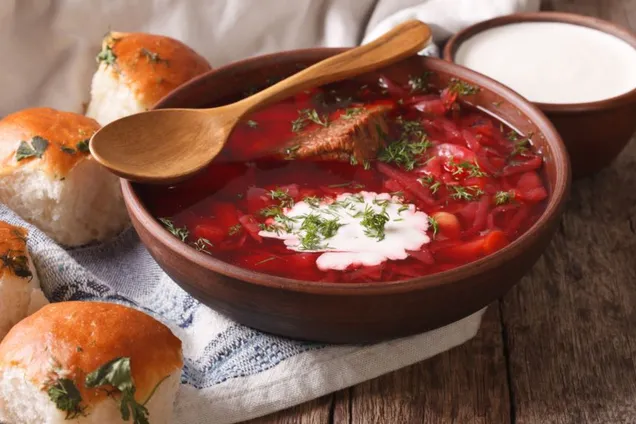
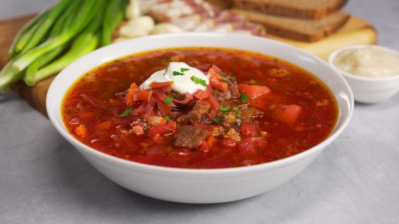
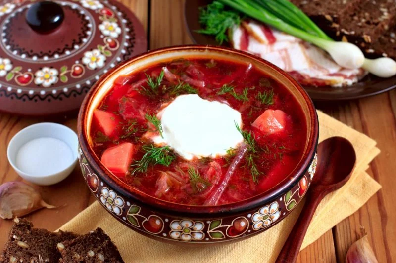
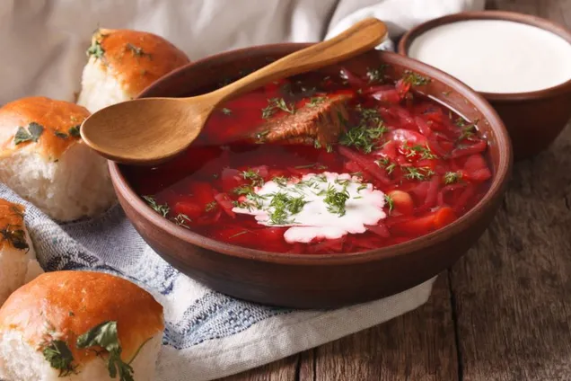
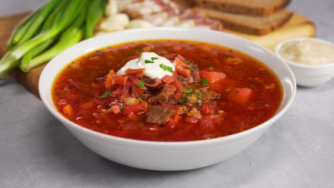
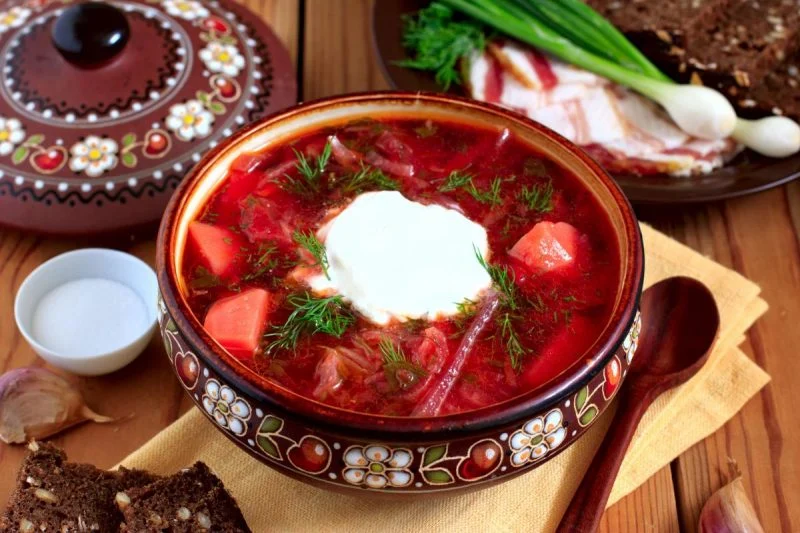
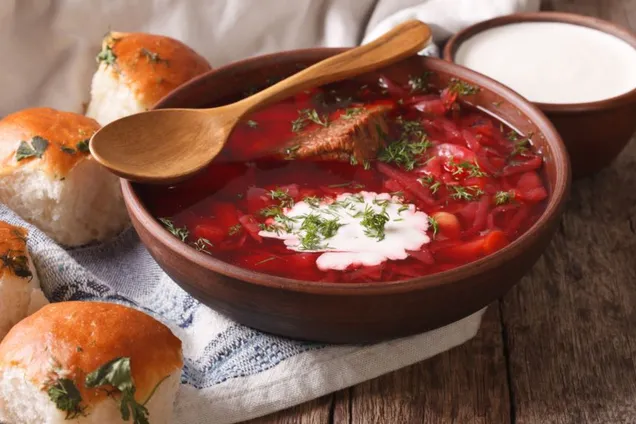
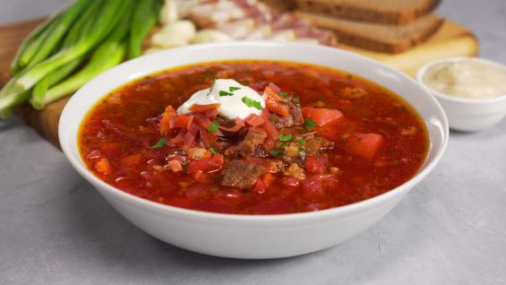
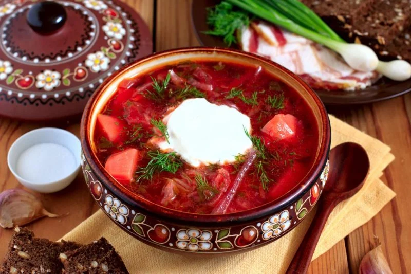

Борщ з пампушками
Борщ — це страва-символ української кухні, якою із задоволенням смакують у всьому світі. Страва має десятки різновидів, що пов’язано з широкою географією проживання українців.
Замовити



Борщ — це страва-символ української кухні, якою із задоволенням смакують у всьому світі. Страва має десятки різновидів, що пов’язано з широкою географією проживання українців.
Замовити